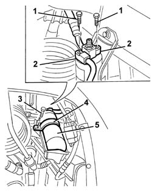
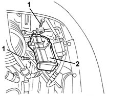
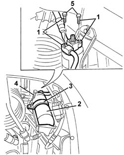
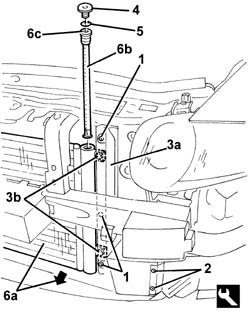
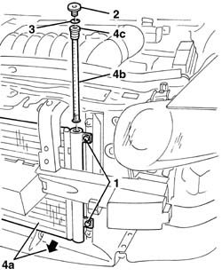

5040A44 air conditioner dehydrating filter/accumulator - r+r
- Path
- Procedures > 50 AUXILIARY UNITS > 5040 AIR CONDITIONING CASING AND COMPONENTS > 5040A air conditioner coolant circuit > 5040A44 air conditioner dehydrating filter/accumulator - r+r
- Kind
- repair procedure (removal / refitting; the operation number is the code)
- Applies to
- all engines; all production periods
- Interactive page
- https://sloeber94.github.io/elrnDB-a147/en/#/3025417
Applies to: all engines; all production periods
Applies to: all engines; all production periods
 Removing
Removing
 Refitting
Refitting7055B54 under-engine guard - r r
5040B14 air conditioner system multi-level pressure switch - r+r
1. Undo the bolts fixing the pipe connectors.
2. Disconnect the connector from the drier filter.
3. Undo the bracket retaining bolt.
4. Remove the bracket.
5. Recover the drier filter.

Applies to: all engines; all production periods
1. If necessary, undo the bolts fixing the support.
2. Remove the mount.

Applies to: all engines; all production periods
Refitting
RemovingCheck that the drier filter is intact and there are no signs of damage.
If removed, position the mount and fix it using the nuts.
Follow these precautions:
1. Connect the pipe connectors without tightening the fixing bolts.
2. Position the drier filter.
3. Position the bracket.
4. Tighten the bolt.
5. Tighten the bolts fixing the connectors to the recommended torque.
 | Fastening | Component | Ø | Value (daNm) |
|---|---|---|---|---|
- | Bolt | COOLANT SYSTEM FITTINGS | M6 | 0.9 |

Applies to: all engines; all production periods
5040B14 air conditioner system multi-level pressure switch - r+r
7055B54 under-engine guard - r r
Repressurize using coolant fluid (5040A10 Air conditioning refrigerant CIRCUIT - Draining and Refilling ).
Applies to: engines: 1.9 JTD 16V; all production periods
Removing
RefittingObserve the following precaution.
7025A12 Engine front sound insulation COVER - R.R.
Drain the coolant (0010T84 coolant for air conditioning system dehydrate and recharge ).
7055B54 under-engine guard - r r
7055B64 Engine compartment DUST shield in front wheel arch (one), left or right - R.R.
7055B42 Additional FRONT WHEEL ARCH (one), left or right - R.R.
1. Undo the bolts shown securing the duct.
2. Releaset he air duct retaining buttons using the special tool.
 | Name | Country |
|---|---|---|
2 | Scraper blade | 1.823.015.000 |
3. Move the profile (3a) for the air duct slightly and undo the bolts (3b) underneath fastening the condenser.
4. Undo the plug for the drier filter container.
5. Release the retaining ring.
6. Move the condenser (6a) slightly forwards and extract the drier filter cartridge (6b), after having tightened a threaded bolt for the tool indicated below or an M12x1.75 screw in the opening.
| Name | Country |
|---|---|---|
6 | Extractor | 1.842.134.000 |

Applies to: engines: 1.9 JTD 16V; all production periods
Refitting
RemovingCheck that the drier filter cartridge is not damaged.
Move the condenser slightly forwards and fit the drier filter cartridge.
Fit the retaining ring.
Tighten the drier filter container plug.
Tighten the bolts fixing the condenser.
Engage the retaining buttons for the air duct.
Tighten the bolts fixing the air duct.
7055B42 Additional FRONT WHEEL ARCH (one), left or right - R.R.
7055B64 Engine compartment DUST shield in front wheel arch (one), left or right - R.R.
7055B54 under-engine guard - r r
Repressurize using coolant fluid (0010T84 coolant for air conditioning system dehydrate and recharge ).
Applies to: engines: 3.2 V6; all production periods
Removing
RefittingObserve the following precaution.
Drain the coolant (0010T84 coolant for air conditioning system dehydrate and recharge ).
7055B54 under-engine guard - r r
7055B64 Engine compartment DUST shield in front wheel arch (one), left or right - R.R.
7055B42 Additional FRONT WHEEL ARCH (one), left or right - R.R.
1. Undo the bolts shown fastening the condenser.
2. Undo the plug for the drier filter container.
3. Release the retaining ring.
4. Move the condenser (4a) slightly forwards and extract the drier filter cartridge (4b), tightening a threaded bolt for the tool indicated below or an M12x1.75 screw in the opening (4c).
| Name | Country |
|---|---|---|
4 | Extractor | 1.842.134.000 |

Applies to: engines: 3.2 V6; all production periods
Refitting
RemovingCheck that the drier filter cartridge is not damaged.
Move the condenser slightly forwards and fit the drier filter cartridge.
Fit the retaining ring.
Tighten the drier filter container plug.
Tighten the bolts fixing the condenser.
7055B42 Additional FRONT WHEEL ARCH (one), left or right - R.R.
7055B64 Engine compartment DUST shield in front wheel arch (one), left or right - R.R.
7055B54 under-engine guard - r r
Repressurize using coolant fluid (0010T84 coolant for air conditioning system dehydrate and recharge ).
Topics linked from this page (10)
- 0010T84 coolant for air conditioning system dehydrate and recharge
- 5040 AIR CONDITIONING CASING AND COMPONENTS
- 5040A10 Air conditioning refrigerant CIRCUIT - Draining and Refilling
- 5040B14 air conditioner system multi-level pressure switch - r+r
- 7025A12 Engine front sound insulation COVER - R.R.
- 7025A14 Bonnet LID - R.R.
- 7055B42 Additional FRONT WHEEL ARCH (one), left or right - R.R.
- 7055B54 under-engine guard - r r
- 7055B64 Engine compartment DUST shield in front wheel arch (one), left or right - R.R.
- 7210E10 R.R. CENTRE PILLAR